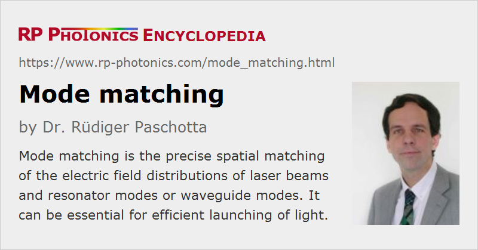

Mode Matching
Definition: the precise spatial matching of the electric field distributions of laser beams and resonator modes or waveguide modes
German: Modenanpassung
Categories: general optics, optical resonators
How to cite the article; suggest additional literature
Author: Dr. Rüdiger Paschotta
In many situations, it is necessary to match a laser beam precisely to another beam or a mode in order to obtain some kind of efficient coupling. Examples are:
- A beam from a laser has to be coupled into an optical fiber.
- A laser beam must be matched to a passive optical resonator which should act, e.g., as a spatial and/or spectral filter (→ mode cleaner cavities).
- For injection locking, the mode of a master laser has to be matched to that of the slave laser.
The necessary matching of modes means not only creating a good spatial overlap of the intensity profiles, but also matching the optical phase profiles. If the complex amplitude profiles of two beams are well matched in a certain plane, they will remain well matched during further propagation. Mode matching can be achieved by using suitable relay optics (typically some combination of curved mirrors or lenses), provided that the beam quality of the initial beam is close to diffraction-limited.
Mathematically, the quality of mode matching can be quantified with an overlap integral. The following formula, involving the square of such an overlap integral, calculates the coupling efficiency concerning optical powers:
where E1 and E2 are the complex electric fields in a plane, referring e.g. to a laser beam and the field of a resonator or waveguide mode, and the integration spans the whole beam cross-section. That quantity is preserved during propagation in free space.
Overlap integral can also be used for calculating complex mode amplitudes.
If the beam from a frequency-tunable single-frequency laser hits a symmetric Fabry–Pérot interferometer and the laser frequency is tuned over the whole free spectral range of the resonator, the transmitted light can be used to analyze the degree of mode matching. For perfect matching to a cavity mode (typically the fundamental Gaussian mode), complete transmission of the resonator can be observed when the resonance condition is met, whereas other resonances (corresponding to other resonator modes) can not be excited.
Questions and Comments from Users
Here you can submit questions and comments. As far as they get accepted by the author, they will appear above this paragraph together with the author’s answer. The author will decide on acceptance based on certain criteria. Essentially, the issue must be of sufficiently broad interest.
Please do not enter personal data here; we would otherwise delete it soon. (See also our privacy declaration.) If you wish to receive personal feedback or consultancy from the author, please contact him e.g. via e-mail.
By submitting the information, you give your consent to the potential publication of your inputs on our website according to our rules. (If you later retract your consent, we will delete those inputs.) As your inputs are first reviewed by the author, they may be published with some delay.
See also: modes, cavities, laser beams, diffraction-limited beams
and other articles in the categories general optics, optical resonators
|  |
If you like this page, please share the link with your friends and colleagues, e.g. via social media:
These sharing buttons are implemented in a privacy-friendly way!